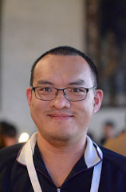

Information
- Yu-Fang Chen
- Full Professor/Research Fellow (Since 2018), Institute of Information Science, Academia Sinica, Taiwan
- Email: yfc@iis.sinica.edu.tw
- Phone: +886-2-2788-3799 #1514
- Address: No.128, Section 2, Academia Road, Nankang District, Taipei 115, Taiwan

Awards
- Our string solver Z3-Noodler won QF_Strings in SMTCOMP 2024
- Best paper nomination TACAS 2024
- Distinguished paper award OOPSLA 2023
- Young Scholar Creativity Award, Foundation for Advancement of Outstanding Scholarship, Taiwan, 2023
- Distinguished paper award PLDI 2023
- Best paper award FM 2023
- MOST Research Project for Excellent Junior Research Investigators 2020-2023.
- Best paper award TACAS 2010
Research Interests
- Formal Verification
- Quantum Programs
- Automata Theory
- Satisfiability Modulo Theory
AutoQ Project: Automata-based Quantum Program Verification
The project is based on a novel perspective on quantum states and gates by interpreting a quantum state as a binary decision tree and a quantum gate as a transformation on this tree. This approach brings up an intriguing challenge: in classical verification, binary decision diagrams (BDDs) effectively encode sets of states, but in the quantum context, a BDD can represent only a single state. This raises the question: how can we extend this to encode a set of quantum states?
Our initial solution explores the use of tree automata, a standard method for representing sets of trees. Building on this concept, we have developed a framework for automated quantum program verification. This framework offers new insights into the verification process and could potentially enhance the scalability and accuracy of quantum program analysis.
References:
Recent Publications
-
Hao Wu, Yu-Fang Chen, Zhilin Wu, Bican Xia, Naijun Zhan
A Decision Procedure for String Constraints with String/Integer Conversion and Flat Regular Constraints.
Acta Informatica 2024
-
Yu-Fang Chen, David Chocholatý, Vojtech Havlena, Lukás Holík, Ondrej Lengál, Juraj Síc
Z3-Noodler: An Automata-based String Solver.
TACAS 2024 (Best paper nomination)
-
Yu-Fang Chen, Vojtech Havlena, Ondrej Lengál, Andrea Turrini
A symbolic Algorithm for the Case-split Rule in Solving Word Constraints with Extensions.
Journal System Software 2023
-
Yu-Fang Chen, David Chocholaty, Vojtech Havlena, Lukás Holik, Ondrej Lengal, Juraj Síc
Solving String Constraints with Lengths by Stabilization.
OOPSLA 2023 (Distinguished paper award)
-
Yu-Fang Chen, Philipp Rümmer and Wei-Lun Tsai
A Theory of Cartesian Arrays with Applications in Quantum Circuit Verification.
CADE 2023
-
Yu-Fang Chen, Kai-Min Chung, Ondřej Lengál, Jyun-Ao Lin, Wei-Lun Tsai.
AutoQ: An Automata-based Quantum Circuit Verifier. Link
CAV 2023
-
Yu-Fang Chen, Kai-Min Chung, Ondřej Lengál, Jyun-Ao Lin, Wei-Lun Tsai, Di-De Yen.
An Automata-based Framework for Verification and Bug Hunting in Quantum Circuits
Link
Talk at PLDI2023
Slides
PLDI 2023 (Distinguished paper award) and a presentation at QPL 2023
-
Frantisek Blahoudek, Yu-Fang Chen, David Chocholaty, Vojtech Havlena, Lukás Holik, Ondrej Lengal, Juraj Síc.
Word Equations in Synergy with Regular Constraints. Link
FM 2023 (Best paper award)
-
Yong Li, Yu-Fang Chen, Lijun Zhang, Depeng Liu.
A novel learning algorithm for Büchi automata based on family of DFAs and classification trees Link
Information and Computation 2021
-
Yu-Fang Chen, Wei-Lun Tsai, Wei-Cheng Wu, Di-De Yen, Fang Yu.
PyCT: A Python Concolic Tester. Link
APLAS 2021
-
Parosh Aziz Abdulla, Mohamed Faouzi Atig, Yu-Fang Chen, Bui Phi Diep, Lukás Holík, Denghang Hu, Wei-Lun Tsai, Zhilin Wu, Di-De Yen.
Solving Not-Substring Constraint with Flat Abstraction. Link
APLAS 2021
-
Yu-Fang Chen, Vojtech Havlena, Ondrej Lengal, and Andrea Turrini.
A Symbolic Algorithm for the Case-Split Rule in String Constraint Solving Link
APLAS 2020
-
Yun-Sheng Chang, Yao Hsiao, Tzu-Chi Lin, Che-Wei Tsao, Chun-Feng Wu, Yuan-Hao Chang, Hsiang-Shang Ko, and Yu-Fang Chen.
Determinizing Crash Behavior with a Verified Snapshot-Consistent Flash Translation Layer Link
OSDI 2020
-
Parosh Aziz Abdulla, Mohamed Faouzi Atig, Yu-Fang Chen, Phi-Diep Bui, Julian Dolby, Petr Janku, Hsin-Hung Lin, Lukas Holik, Wei-Cheng Wu.
Efficient Handling of String-Number Conversion Link
PLDI 2020
-
Yu-Fang Chen, Vojtech Havlena, Ondrej Lengál.
Simulations in Rank-Based Büchi Automata Complementation. Link
APLAS 2019
-
Yu-Fang Chen, Chang-Yi Chiang, Lukás Holík, Wei-Tsung Kao, Hsin-Hung Lin, Tomás Vojnar, Yean-Fu Wen, Wei-Cheng Wu.
J-ReCoVer: Java Reducer Commutativity Verifier. Link
APLAS 2019
-
Yu-Fang Chen, Hsiao-chen Chung, Wen-Chi Hung, Ming-Hsien Tsai, Bow-Yaw Wang, Farn Wang.
Synthesize Models for Quantitative Analysis Using Automata Learning. Link
NETYS 2019
- Full Publications (Google Scholar)
Services
Recent PC Duties
- 2025: FoSSaCS
- 2024: CAV, ATVA, CONCUR, DATE, NETYS
- 2023: CAV, ATVA, SAS, DATE
- 2022: CAV, ATVA, VMCAI
- 2021: LICS, ATVA, FASE, VMCAI
- 2020: CONCUR, ATVA, FASE
- 2019: TACAS, ATVA, SAS
Steering Committee
Organizers
- MOSCA 2023@CAV
- Flolac Summer School 2023
- ATVA 2019